всё началось с торта в Тг — первый подарок, первое «я хочу, чтобы ей было приятно»
30.04.2025
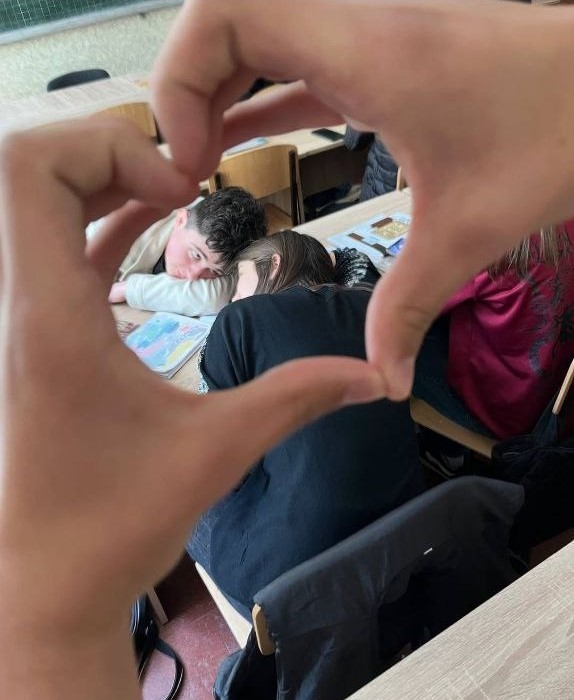
никто ещё не знал, а уже всё началось
01.05.2025
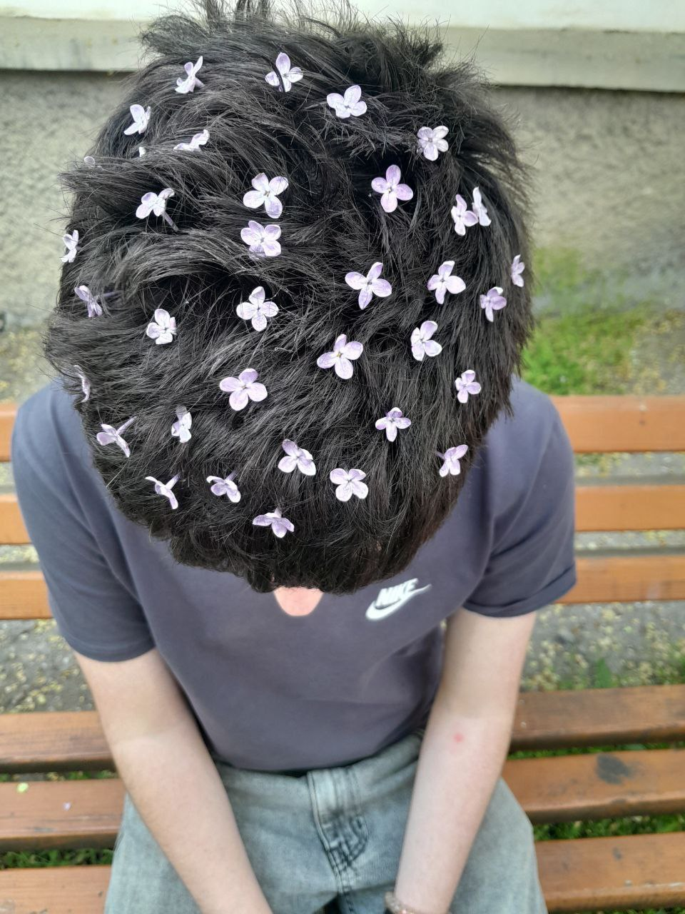
мы просто гуляли, просто играли с тренд… а потом всё стало не «просто»
03.05.2025
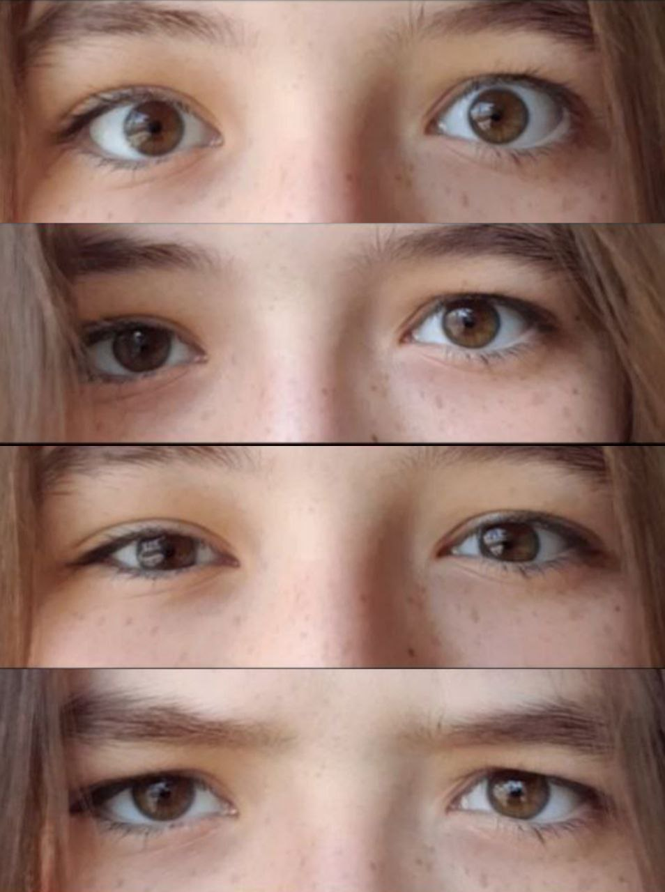
эти глаза я помню с первого взгляда, даже когда ещё не знал, что запомню🫠
03.05.2025
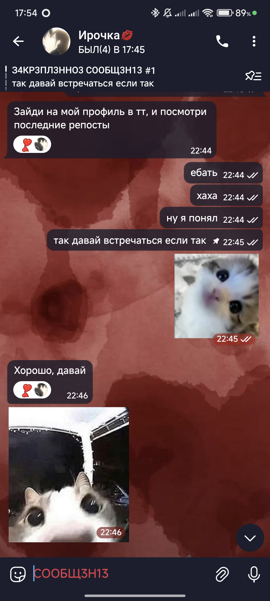
тогда, в 22:45, я не просто предложил встречаться… я, по сути, выбрал тебя навсегда
07.05.2025
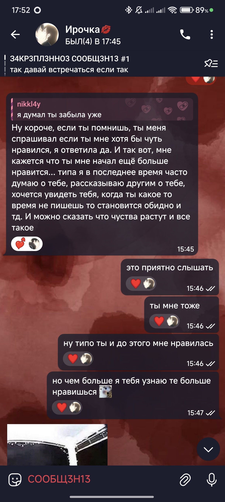
первый раз, когда ты открылась по-настоящему... и всё стало ещё теплее внутри
07.05.2025
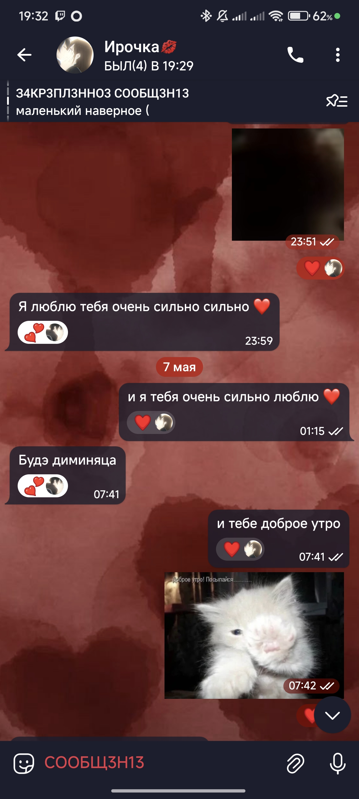
твоё первое «доброе утро»… с него начался каждый мой день, где ты — первая мысль
09.05.2025
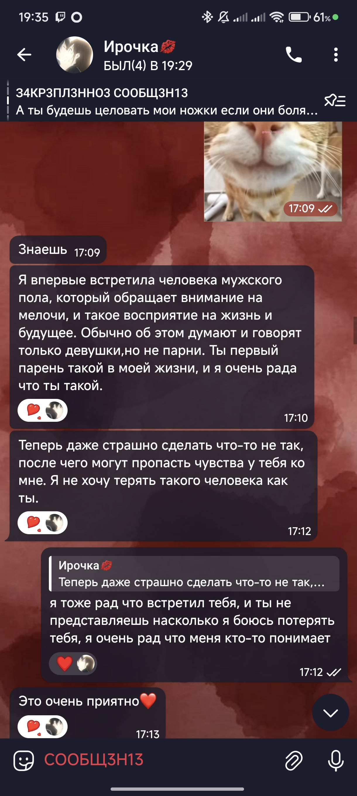
ты сказала, что я — как никто другой, и что страшно… тогда и мне стало страшно — потерять тебя
12.05.2025
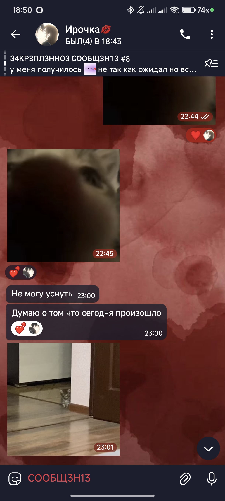
тот самый день у озера... солнце, тишина, ты, я… и что-то очень тёплое и мягкое (не вода 😌)
13.05.2025
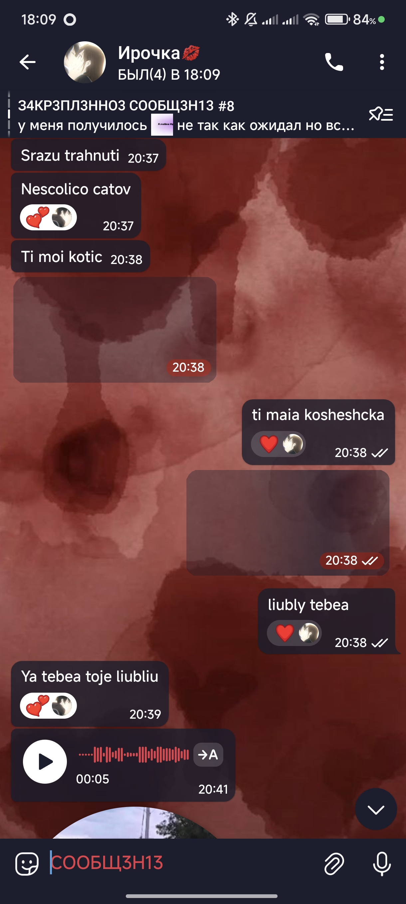
язык любви — это не румынский, не русский… это вот эта хуйня🙄
25.05.2025
наши авы целуются чаще, чем мы — но мы их догоним, честно 😘
30.05.2025
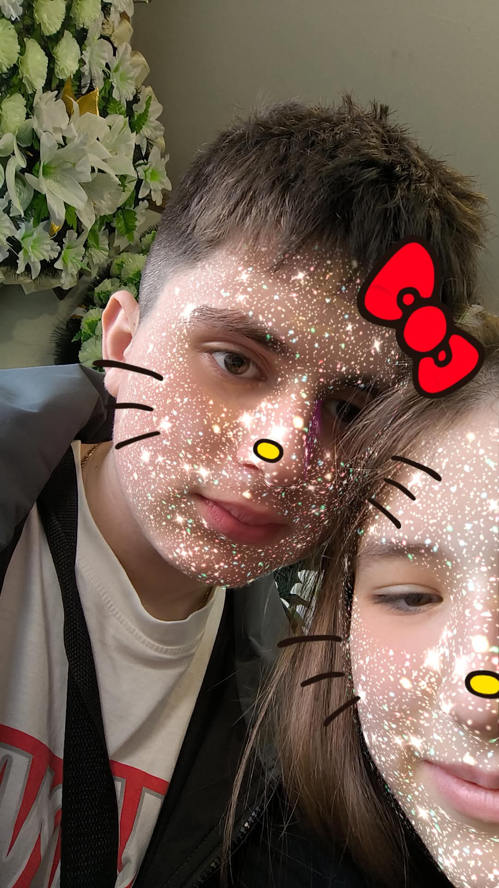
впервые мы сами нажали на "сделать фото" — с этого момента начался наш альбом)))
31.05.2025
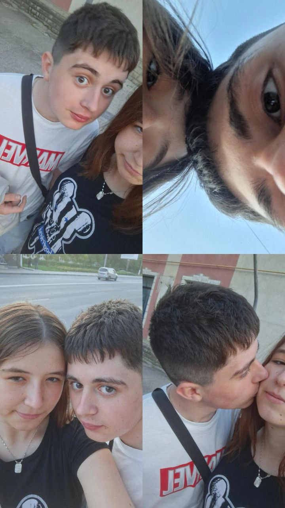
уже не одна, а пачка — потому что «давай ещё», «а вот так», «подожди, щас смешно будет»
11.06.2025
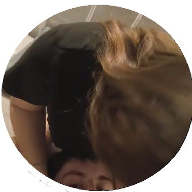
да, это та самая фотка 👀
11.06.2025
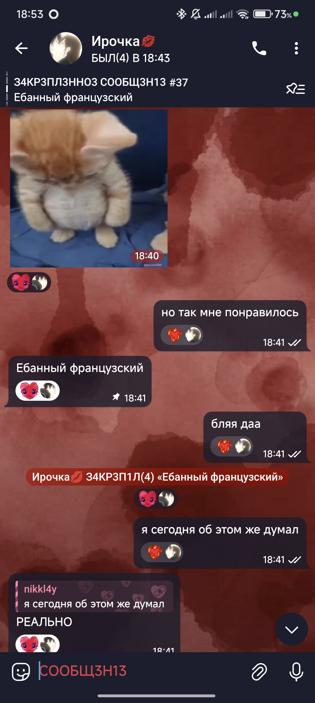
всё началось с "что задали по французскому?", а закончилось... ну, ты знаешь 😏 ебаный французский, спасибо тебе, блять
11.06.2025
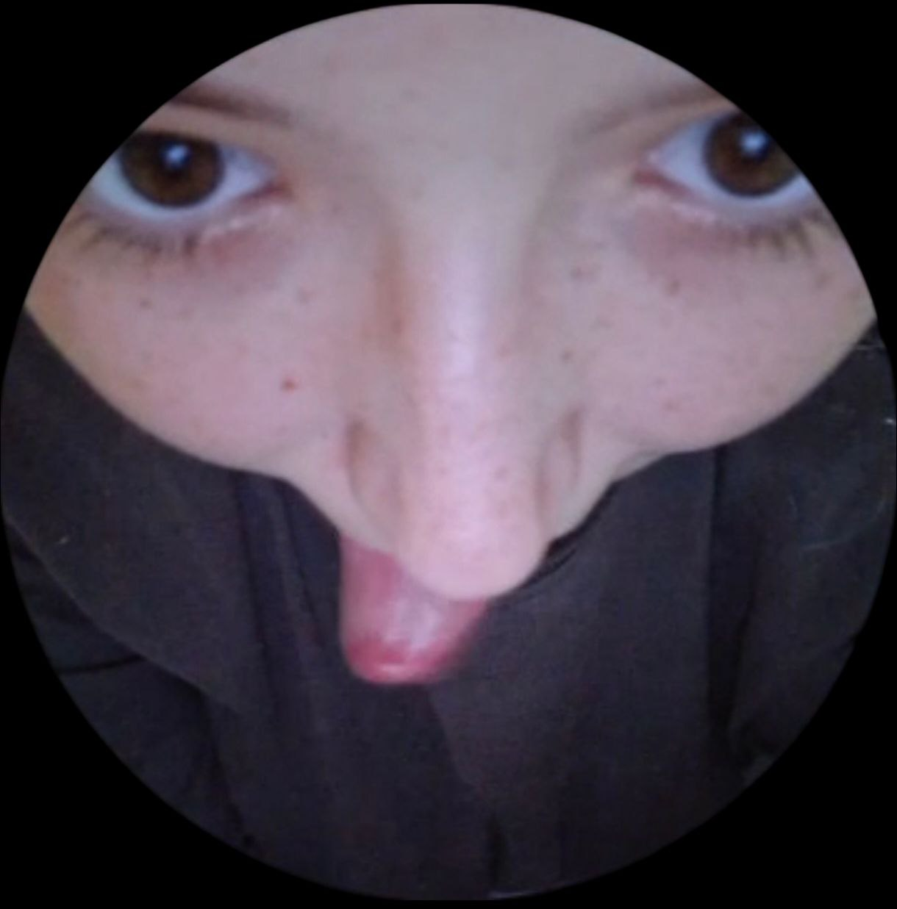
эта фотка у меня вызывает жажду жизни и не только… ты там такая мммм, аж зависнуть можно 🥵
20.08.2025
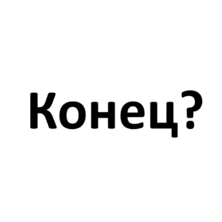
Оно ждёт только одного ответа...
Пришло время сказать всё.
Наверное, это должно было случиться. Не потому что что-то закончилось, а наоборот — потому что многое началось. Иногда нужно остановиться, глубоко вдохнуть и честно проговорить всё, что внутри. Не на эмоциях, не в спешке, а спокойно и по-настоящему. Сейчас именно такой момент. Мне хочется подытожить всё, что мы прожили, и рассказать, что для меня значит мы.
Всё началось не просто с фразы или случайного интереса. Это всё как будто росло изнутри. Сначала медленно, неуверенно, с попытками понять друг друга. А потом как будто в нас щёлкнуло. Мы не просто начали встречаться — мы начали быть. Ты появилась в моей жизни, и всё будто обретает смысл. С того самого начала, когда было немного неловко, но уже тогда — тепло. Уже тогда я начал видеть, что ты — моя девочка.
Ты была моей первой во всём. Первый поцелуй, первый раз — вообще первый, в жизни, у нас обоих. Не просто физически — в этом был смысл, был момент, было что-то особенное. Я помню всё. И не потому что у меня хорошая память (ты знаешь, как с ней у меня), а потому что ты важна. Я часто забываю, что ты мне говорила, когда дело касалось каких-то мелочей. Но я не забываю, когда ты была рядом, как ты смотрела, как ты держала меня, как улыбалась — в такие моменты я живу.
Третий месяц был сложным. Мы были на расстоянии. я уехал, ты осталась((((((((. И всё вроде как на связи, но ощущение — будто без тебя как-то не дышится. Это тест на прочность. И я чувствовал, что мне не хватает тебя — твоего голоса, твоих рук, даже твоих шуток. Ты — моя любимая, даже когда злишься или молчишь. Особенно тогда, когда молчишь — потому что даже в тишине я чувствую тебя рядом. А ещё я просто пиздец как жду осень. Потому что школа — это не просто «начнётся учеба», это значит, что я буду тебя видеть, и не в экране, а вживую. Это единственное, что действительно меня радует в приближении осени.
Что я чувствую? Наверное, слишком много. Иногда мне сложно уложить это в слова. Мне хочется быть рядом, держать тебя за руку. Не как пафосный жест из кино, а просто — потому что мне с тобой спокойно. Мне хочется, чтобы ты знала: даже когда я косячу, даже когда не понимаю, даже когда молчу — я тебя люблю. Люблю так, как не умел раньше. Потому что раньше просто не было тебя.
Мне нравится, когда ты зовёшь меня хорошеньким. Я не всегда это показываю, но внутри у меня там что-то сжимается от нежности. А когда я тебя называю своей девочкой — это не просто милота. Это правда. Ты — моя. И не в смысле собственности, а в смысле близости. Ты — та, с кем мне не хочется ничего скрывать.
У меня нет сложных планов. Пока моё главное желание — чаще видеть тебя. Хочу чтобы мы просто проводили больше времени вместе. А ещё, если честно… я очень хочу, чтобы мы поспали вместе. Не про секс сейчас — а просто лечь рядом, обнять, и знать, что ты здесь. Что не исчезнешь, не растворишься, не уйдёшь в себя. Чтобы ночь была не пустой, а полной тебя.
А дальше? Дальше мечта. Простая, но сильная: пожениться и умереть в один день. Не хочу уходить, если тебя рядом нет. Хочу прожить с тобой всё, что только можно. Разное. Лёгкое и тяжёлое. Радость, усталость, веселье, ссоры, примирения. Я знаю, что мы не идеальные. Да и нахуй быть идеальными. Главное — быть вместе.
И да, если говорить про мечты, то они уже давно не про «одиночное счастье». Всё, чего я хочу дальше — это ты рядом. Хочу, чтобы у нас была настоящая жизнь. Чтобы когда-нибудь у нас были детишки, такие же упрямые и смешные, как ты, или такие же влюбчивые и мечтательные, как я. Представь, как ты будешь их одевать, а я жаловаться, что они опять пролили сок на диван. Мы будем уставать, ржать, обниматься, и всё это — вместе. Это не просто мечта. Это моя цель.
Ты красивая. Просто запомни это. Даже когда не веришь в себя. Даже когда в пижаме и с растрёпанными волосами. Даже когда злишься и делаешь вид, что тебе всё нормально. Я всё равно вижу тебя — и думаю: «бля, ну вот она, мая девачка».
Я не всегда умею говорить. Иногда туплю, иногда переживаю, иногда делаю вид, что всё в порядке. Но это не значит, что мне всё равно. Это значит, что мне очень не всё равно. Просто я — такой. А ты — ты. И это охуенное сочетание.
Мы ещё многое пройдём. Я не знаю, что будет завтра. Но если ты рядом — мне уже не страшно. Я тебя люблю. Сильно. Настояще. До мурашек. До злости. До радости. До конца.
И знаешь что?.. Спасибо тебе, девочка моя. За то, что ты — есть.
И в конце, наверное, самое важное — я люблю тебя. Не просто «я тебя люблю», как шаблон, а вот так — без остатка, по-настоящему, в каждый день, в каждый твой взгляд, в каждый момент, когда тебя нет рядом, и в каждый момент, когда ты есть. Люблю, как воздух, как сон после долгого дня, как песню, которую можно слушать вечно. Ты — моя девочка, моё солнышко, моё всё.
И я верю, что мы пройдём вместе всё — и дождь, и солнце, и школы, и переезды, и усталость, и радость, и свадьбу, и долгую жизнь, где мы состаримся вместе… и когда-нибудь, как и мечталось — умрём в один день. Но пока до этого далеко, у нас впереди целая история. И, блять, я готов пройти её с тобой до конца.